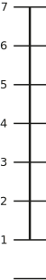

Fatigue Severity
Scale
Die Erschöpfung
behindert mich an der
Ausführung bestimmter
Aufgaben und Pflichten
Bitte ziehen Sie den Punkt auf den entsprechenden Wert


Die Erschöpfung
behindert mich an der
Ausführung bestimmter
Aufgaben und Pflichten
Bitte ziehen Sie den Punkt auf den entsprechenden Wert